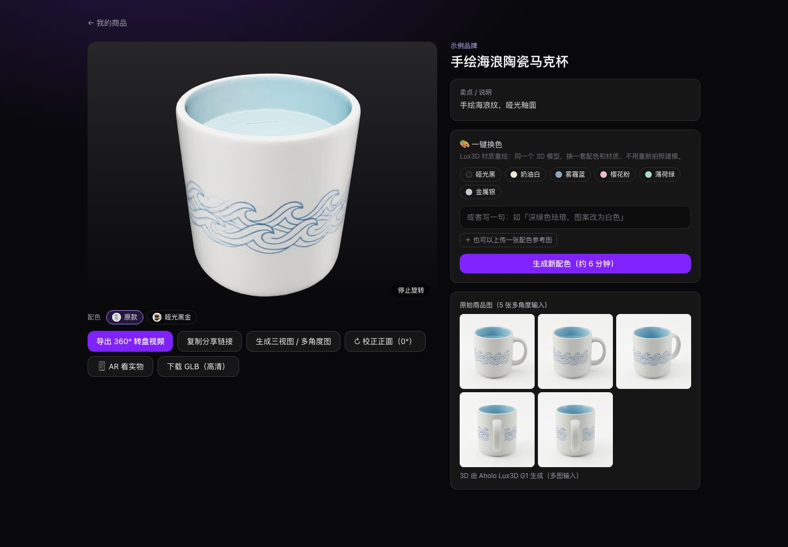

商品 3D 工作台

给电商商家用。痛点：上架一个商品要建模、进棚拍多角度、做视频，小商家做不起。这个工具一张商品图进，3D 模型、多角度图、转盘视频、换色款、AR 预览一次出齐，直接上架。3D 由群核 Aholo Lux3D 图生 3D 生成，我做的是商家能直接用的工作台。线上地址 ↗ · GitHub ↗
怎么实现
一张商品图，一套电商素材
Before建模排期、进棚拍多角度图、寄样前对方看不到实物After传图，约 5 分钟出 3D，其余素材浏览器里一键出
01上传与生成Lux3D 图生 3D
- 传 1 到 8 张，同一商品多角度更准；前端先压缩再上传
- 两档：快速预览约 1.5 分钟只看外形，高质量约 5 分钟图案文字清晰
02多角度图与转盘视频浏览器端
- 正交相机对准模型包围盒，渲染正、右、俯、后、左、3/4 六个视角，拼成带标签的合成图
- 转盘视频在浏览器里直接录，6 秒一圈，不走服务器
03一键换色Lux3D 材质重绘
- 选预设或写一句，先生成配色参考图，再对同一个模型重绘材质；也可直接传参考图
04AR 与分享导出 + 人
- AR 预览：每个模型和配色自动导出 USDZ，手机上按真实尺寸放进房间看效果，适合插画、装饰品、家居这类要看摆放效果的商品；iPhone 走 AR Quick Look，安卓走 Scene Viewer，电脑出二维码
- 分享页泰中双语、只读，达人和客户不用登录就能转着看、下转盘视频、下多角度图；寄样前先看，实物照寄
实测出来的判断
做之前先拿官方示例、马克杯、游戏鼠标各跑了几轮，记时间和效果，产品上的几个决定都来自这张表。
实测同一只马克杯：单图出来波浪纹糊成乱线，五张多角度图进去背面图案位置才对
于是上传框提示「同一商品多拍几个角度」，默认鼓励多图
实测高质量档比快速档慢四倍、积分贵二十倍，但釉面光泽和花纹明显最好
于是两档都留，默认高质量；快速档标明「只看外形」，给先看个大概的人
实测游戏鼠标五图生成后正面朝向反了 180°
于是详情页加「校正正面」按钮，转盘和多角度图都按校正后的朝向出
实测官方产物链接只有两小时有效
于是任务成功立刻下载转存到自己的存储，分享页永远能打开
长什么样

工作台：传图、选档位，下面是我的商品

分享页：泰中双语，寄样前先发给海外达人看
工具
Aholo Lux3D API · Next.js · Three.js · Vercel Blob · Claude Code 编写